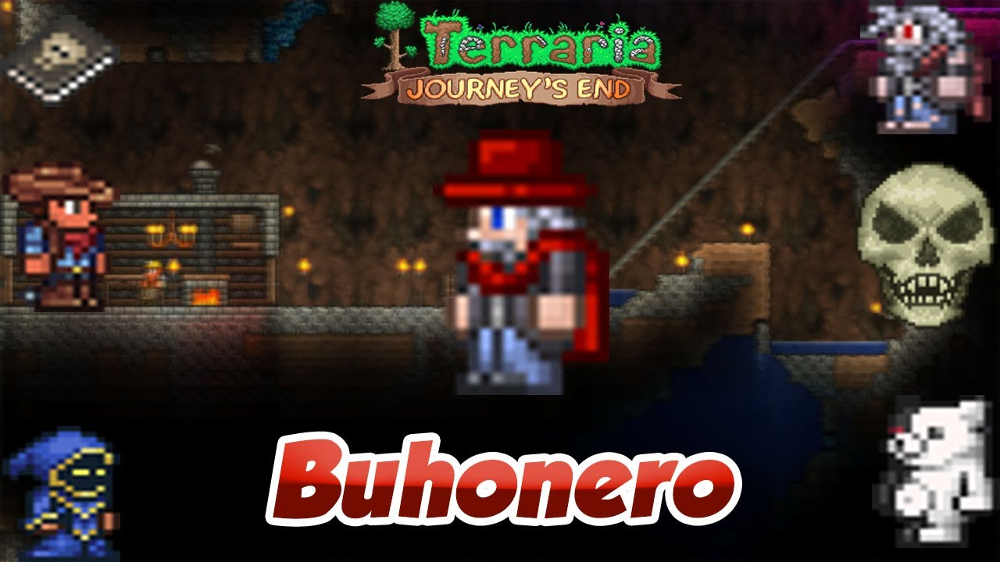

Para conseguir a este NPC es necesario matar a Esqueletrón. El Anciano revive (siempre y cuando tengas una casa libre) como el Buhonero.
El buhonero |
|
 |
|
Estadisticas |
|
Tipo |
NPC |
Salud |
250 |
Arma |
Libro de calaberas (inflige llamas malditas) |
Defensa |
15 |
Especialidad |
Vende ropas e hilos. |
Bestiario |
|
Descripcion |
Una vez atrapado bajo una maldición, el Buhonero es el maestro de los hilos. Si moda lo que deseas, ¡él es el hombre!. Él habla en una manera familiar. |
Bioma preferido |
El subsuelo |
Deja |
|
Sombrero rojo |
100% |
IDs internas |
|
ID de bestiario |
54 |
ID de NPC |
17 |
Cuando hay Luna de Sangre:
Cuando hay una Fiesta:
| Objeto | Precio | Disponibilidad |
|---|---|---|
| Hilo negro | 1 |
Siempre disponible |
| Hilo rosa | 1 |
Siempre disponible |
| Peluca informal | 1 |
Siempre disponible |
| Camisa informal | 1 |
Siempre disponible |
| Pantalones informales | 1 |
Siempre disponible |
| Gorro de lana | 1 |
Tener una casa en la Tundra |
| Camisa de fontanero | 25 |
Durante Luna llena |
| Pantalones de fontanero | 25 |
Durante Luna llena |
| Camisa de esmoquin blanca | 25 |
Durante Luna llena |
| Pantalones de esmoquin blanco | 25 |
Durante Luna llena |
| Camisa del doctor | 20 |
Durante el día de Gibosa menguante |
| Pantalones del doctor | 20 |
Durante el día de Gibosa menguante |
| Máscara de mimo | 2 |
Durante Luna de Sangre |
| Camisa de esmoquin caída | 25 |
Durante una noche de Luna de Sangre |
| Pantalones de esmoquin caídos |
25 |
Durante una noche de Luna de Sangre |
| Máscara de Guy Fawkes | 3 |
Durante Halloween |
| Chaqueta de buhonero | 3 |
Durante Halloween |
| Pantalones de buhonero | 3 |
Durante Halloween |
| Puñado de globos de fiesta | 2 |
Durante la Fiesta |
| Animal globo | 2 |
Durante la Fiesta |
| Pétalos de girasol absurdos | 3 |
Durante la Fiesta |
| Hojas de girasol absurdas | 3 |
Durante la Fiesta |
| Raíces de girasol absurdas | 3 |
Durante la Fiesta |
| Sombrero de George | 1 |
Durante Luna de Sangre, personaje masculino |
| Camisa de esmoquin de George |
25 |
Durante Luna de Sangre, personaje masculino |
| Pantalones de esmoquin de George |
25 |
Durante Luna de Sangre, personaje masculino |
| Pajarita fabulosa | 1 |
Durante Luna de Sangre, personaje femenino |
| Tutú fabuloso | 25 |
Durante Luna de Sangre, personaje femenino |
| Zapatillas fabulosas | 25 |
Durante Luna de Sangre, personaje femenino |
| Oktober Locks | 80 |
Durante Oktoberfest |
| Blusa Drindl | 1 |
Durante Oktoberfest |
| Falda Dirndl | 1 |
Durante Oktoberfest |
| Gorro alpino | 80 |
Durante Oktoberfest |
| Lederweste | 1 |
Durante Oktoberfest |
| Lederhosen | 1 |
Durante Oktoberfest |
| Sombrero de copa festivo | 1 |
Durante Navidad |
| Bastón viejo | 1 |
Durante el día |
| Cabeza de Toro | 10 |
Durante Luna de Sangre |
| Cuerpo de Toro | 25 |
Durante Luna de Sangre |
| Piernas de Toro | 25 |
Durante Luna de Sangre |
| Cabeza de Monomi | 10 |
Durante Luna de Sangre |
| Cuerpo de Monomi | 25 |
Durante Luna de Sangre |
| Piernas de Monomi | 25 |
Durante Luna de Sangre |
| Camisa de Shiren | 25 |
Durante Luna llena |
| Pantalones de Shiren | 25 |
Durante Luna llena |
Adicionalmente a los objetos anteriores, estos se venden después de matar al muro carnoso.
| Objeto | Precio | Disponibilidad |
|---|---|---|
| Sombrero de payaso | 2 |
Después de matar a un Payaso |
| Camisa de payaso | 1 |
Después de matar a un Payaso |
| Pantalones de payaso | 1 |
Después de matar a un Payaso |
| Tiara | 25 |
Durante Luna nueva |
| Vestido de princesa | 10 |
Durante Luna nueva |
| Sombrero de vaquero | 5 |
Durante Cuarto creciente |
| Chaqueta de vaquero | 5 |
Durante Cuarto creciente |
| Pantalones de vaquero | 5 |
Durante Cuarto creciente |
| Tam O' Shanter | 2 |
Durante Cuarto menguante |
| Gorra sombrero | 1 |
Después de derrotar la Legión de escarcha |
| Gorra de malote | 1 |
Después de derrotar la Legión de escarcha |
| Capucha de sectario solar | 10 |
Durante el día después de derrotar al Sectario lunático |
| Vestido de sectario solar | 10 |
Durante el día después de derrotar al Sectario lunático |
| Capucha de sectario lunar | 10 |
Durante la noche después de derrotar al Sectario lunático |
| Vestido de sectario lunar | 10 |
Durante la noche después de derrotar al Sectario lunático |
| Sombrero de recaudador de impuestos | 3 |
Sí esta presente el Recaudador de impuestos |
| Traje de recaudador de impuestos |
3 |
Sí esta presente el Recaudador de impuestos |
| Pantalones de recaudador de impuestos | 3 |
Sí esta presente el Recaudador de impuestos |